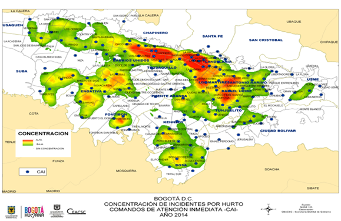
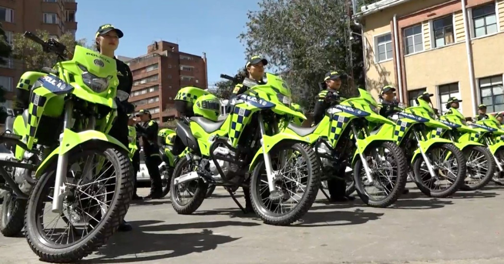
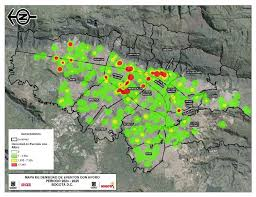

Actualmente somos expertos en monitorear sensores y predecir fallas (Monitoreo Pasivo).
El próximo paso evolutivo de TSG es construir el Laboratorio de Gobernanza y Política Pública.
Transformar el dato en decisiones automatizadas usando Investigación de Operaciones.
Aplicaciones tangibles para la toma de decisiones en Smart Cities:
Operación: Predecir picos de consumo entre industria y zonas residenciales.
Acción Lab: El modelo instruye a la red inteligente para redirigir cargas dinámicamente antes de una sobrecarga local.
Operación: Visión artificial y Teoría de Colas evalúan densidad vehicular en tiempo real.
Acción Lab: Modificación autónoma del minutero de semáforos para disolver cuellos de botella antes de que paralicen la malla vial.
Operación: Modelado espacio-temporal de patrones de comportamiento (acústica, movimientos).
Acción Lab: Activación preventiva de iluminación pública inteligente o alertas disuasivas en zonas con 85%+ de probabilidad de incidentes.
No almacenamos datos para que un operador los lea mañana. Procesamos en tiempo real para que el algoritmo decida hoy.
Dejar de competir en precio (commodity) instalando solo sensores. Pasamos a vender Gobernanza Automatizada, convirtiendo a TSG en socios estratégicos bajo modelos SaaS y consultoría B2G de alto margen.
Pasar del mantenimiento correctivo a la orquestación autónoma. Redistribuir recursos físicos en milisegundos puede ahorrar hasta un 30% en gastos operativos de la ciudad y evitar paradas de servicio.
Reemplazar la intuición y el sesgo político con certeza matemática. Permitimos simulaciones rigurosas de escenarios urbanos antes de que el gobierno invierta millones en infraestructura.
Impacto medible, alta rentabilidad y consolidación de TSG como referente en analítica urbana.
Luz verde para la unidad R&D de Laboratorio de Gobernanza.
Despliegue del algoritmo de benchmark en redes eléctricas simuladas.
Conectar el modelo a la suite de Smart Cities existente de TSG.
Ingesta en tiempo real de telemetría: densidad de tráfico (LPR), concurrencia peatonal (conexiones celulares) y umbrales acústicos (motores a altas RPM). Todo cruzado con data histórica.
El algoritmo procesa la probabilidad estadística de un incidente en la próxima hora. El resultado es un mapa de calor que identifica en rojo los cuadrantes críticos donde convergen la oportunidad y el riesgo.

El motor resuelve un problema de ruteo (*Vehicle Routing Problem*) para identificar y despachar la patrulla más cercana, calculando la trayectoria que cubra la mayor cantidad de zonas rojas en tiempo récord.
El laboratorio envía comandos a la infraestructura IoT: se encienden reflectores y balizas disuasivas preventivamente. El mapa de calor transiciona a verde al reducirse drásticamente la probabilidad del delito.

